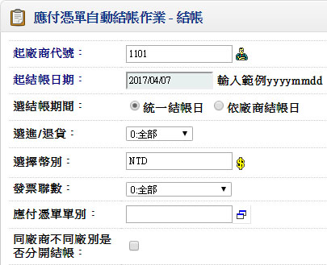
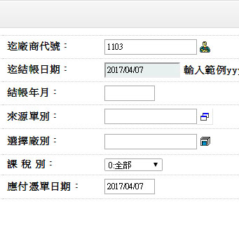
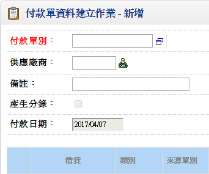
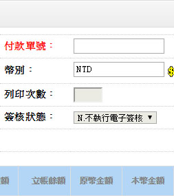

歡迎來到 PHP雲端ERP 的世界
PHP 是開發 雲端ERP 應用程式的工具組。提供簡易的介面和邏輯結構來使用豐富的函式庫，其目的是讓你加 快開發速度。使用 PHP 只需要寫少少的程式，創造力可專注在專案開發。
雲端ERP 使用手冊目錄
三、日常異動以及其他管理
一、應付憑單自動結帳作業
■程式代號：ACPB01
■作業目的：提供批次彙總結帳。
■輸入畫面：
 - ■作業注意事項：
- 依廠商結帳日期之結帳作業
EX:廠商結帳日期=25日(廠商基本資料建立作業需輸入)結帳月份10月，表示9/26至10/25日內之進貨單及退貨單產生於應付憑單
EX:廠商結帳日期= 日(廠商基本資料建立作業未輸入)結帳月份10月，表示10/01至10/31日內之進貨單及退貨單產生於應付憑單 - 依統一結帳日期之結帳作業
EX:起始結帳日89/09/01
截止結帳日期89/09/30
表示09/01至09/30日內之進貨單及退貨單產生於應付憑單 - 當進貨單或退貨單之發票號碼不相同則分別立帳至不同之應付憑單
- 若進貨單或退貨單之發票號碼為空白時結於同一張應付憑單
- ■欄位說明：
- 同廠商不同廠別是否分開結帳
若該廠商於當月份與本公司台中廠及台北廠分別有交易,結帳時是否
產生於同一張應付憑單,或者分開產生兩張應付憑單, 若本公司由總廠
統一付款此欄位不應打勾,以利後續付款作業 - 選擇進/退貨
- 1.進貨、2.退貨、3.託外進貨、4.託外退貨、9.全部
- DEFAULT 9.全部
- IF 選擇進/退貨<>9.全部
選擇來源單別 ENABLE
ELSE
選擇來源單別 DISABLE
ENDI - 選擇來源單別(PUR.TG001、PUR.TI001)
- 空白表全部
二、付款單建立作業
■程式代號：ACPI03
■輸入畫面：
 - ■作業注意事項：
- 應付憑單結帳單可分批次付款
- 付款沖帳時可用不同幣別沖帳
- 付款單輸入完畢須確保單尾之”本國幣差額”=0
- 付款單之會計科目可由基本資料建立會計科目建立預設:
一般:一般付款科目 如:現金
票據:若應付票據科目空白,預設『廠商基本資料』之應付票據科目
差額:若單尾尾差>0,表示借餘,預設貸方差額科目
單尾尾差<0,表示貸餘,預設借方差額科目
折讓:折讓科目 - 若付款為支付訂金之預付性質,則付款之類別可選擇”5:溢付”,且輸入預付性質之來源單別,當此付款單確認後,則電腦將會自動在『應付憑單檔』上增加一張新的『應付憑單』
- 如果本系統與票據系統連線使用,則於輸入類別=”2:票據”於’參考單號’欄位時,可以選擇於畫面上開窗輸入應付票據之資料,或提供應付票據資料之維護功能
- 付款單建立
- 付票據
- 借-[沖帳 應付帳款]
- 貸-[票據 應付票據]
- 付現金OR 匯款
- 借-[沖帳 應付票據]
- 貸-[一般 銀行存款]
- ■欄位說明：
- 幣別
- 若空白，表付款沖帳時不分幣別
- 若此欄位”非空白”時，則單身各筆資料皆需為此一相同幣別
EX:單頭幣別為”NT$”,則只能沖”NT$”之應付憑單 - 類別
- 1:一般、2:票據、7:折讓、3:待抵、4:沖帳、5:溢付、6:差額
- 來源單別-單號